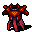

ドラゴンの一覧 List of dragons
英語版 CrawlWiki の記事「List of dragons」(0.28 向け、2023-06-24 版)の翻訳です。原文の著者は編集履歴をご覧ください。
この記事は 0.28 の時点の内容で、最新の 0.34 とは違うところがあるかもしれません。
| 「一方、孔子は弟子たちにこう語ったとされる。『鳥は吾其の能く飛ぶを知り、魚は吾其の能く游ぐを知り、獣は吾其の能く走るを知る。走る者は以て罔を為すべく、游ぐ者は以て綸を為すべく、飛ぶ者は以て矰を為すべし。龍に至りては、吾其の風雲に乗じて天に上るを知る能わず。吾今日老子を見るに、其れ猶お龍のごときか』」
――『孔子伝』(孔子の言葉は『史記』老子韓非列伝による) 「この竜には猛々しい翼が二つ、 ――「ムーア館のムーアとウォントリーの竜とのあいだに戦われし、まことに恐るべき一騎打ちの見事なバラッド」アンブローズ・フィリップス再話、『古バラッド集』(1723年) |
ドラゴンは迷宮の深いところをうろつく強力な爬虫類のモンスターで、元素のブレスで出くわした英雄を片っ端から焼き払う。ドラコニアンはドラゴンの近縁の種族だが、血が近いからといってこの獣たちが少しでも友好的になるわけではない。ドラゴンの強みと弱みは種類によってまったく違うが、どれも竜殺しの武器(今のところ固定アーティファクトのランスドラゴン殺しだけ)に弱く、ほかにも弱点を持つものがいる。
見た目は似ていても、ワイバーンとヒドラは本物のドラゴンではなく、爬虫類として扱われる。
ドラゴンの種類
D  スチームドラゴン - ドラゴンの中でいちばん小さい。煮えたぎる蒸気を吐いて獲物の目をくらませる。
スチームドラゴン - ドラゴンの中でいちばん小さい。煮えたぎる蒸気を吐いて獲物の目をくらませる。
D  アシッドドラゴン - 腐食性の酸を吹きかける小さなドラゴン。
アシッドドラゴン - 腐食性の酸を吹きかける小さなドラゴン。
D  沼ドラゴン - 獲物に毒の煙を吐きかける、やや小ぶりのドラゴン。
沼ドラゴン - 獲物に毒の煙を吐きかける、やや小ぶりのドラゴン。
D  ファイアドラゴン - 火を吐くドラゴンの典型。かなり強いが、冷気に弱い。
ファイアドラゴン - 火を吐くドラゴンの典型。かなり強いが、冷気に弱い。
D  アイスドラゴン - 火を吐く親戚よりひと回り小さい。強烈な冷気のブレスを吐き、火に弱い。
アイスドラゴン - 火を吐く親戚よりひと回り小さい。強烈な冷気のブレスを吐き、火に弱い。
D  ストームドラゴン - 速く、力も強く、稲妻のブレスまで持つ。ドラゴンの中でも指折りの強さだ。
ストームドラゴン - 速く、力も強く、稲妻のブレスまで持つ。ドラゴンの中でも指折りの強さだ。
D  水銀ドラゴン - 細身ですばやい。防ぎようのない破壊のエネルギーを吐くので、もっと大きな親戚の多くより恐れられている。
水銀ドラゴン - 細身ですばやい。防ぎようのない破壊のエネルギーを吐くので、もっと大きな親戚の多くより恐れられている。
D  シャドウドラゴン - 爪と牙だけでも十分に危ないが、そのブレスは衰弱させる負のエネルギーで、強いキャラクターでも弱らせてしまう。
シャドウドラゴン - 爪と牙だけでも十分に危ないが、そのブレスは衰弱させる負のエネルギーで、強いキャラクターでも弱らせてしまう。
D  鉄ドラゴン - 生きた鉄でできたドラゴン。動きが遅く、飛べない。そのかわり、命取りになる金属片のブレスと、とてつもない頑丈さを持つ。
鉄ドラゴン - 生きた鉄でできたドラゴン。動きが遅く、飛べない。そのかわり、命取りになる金属片のブレスと、とてつもない頑丈さを持つ。
D  パールドラゴン - 聖なる炎を吐く、誇り高く気高いドラゴン。不屈の英雄の象徴であり、ゾットのオーブまで本当にたどり着けるのだと若い英雄たちを励ます存在でもある。だからといって、あなたを食べないとは限らない。
パールドラゴン - 聖なる炎を吐く、誇り高く気高いドラゴン。不屈の英雄の象徴であり、ゾットのオーブまで本当にたどり着けるのだと若い英雄たちを励ます存在でもある。だからといって、あなたを食べないとは限らない。
D  骸骨ドラゴン - ほかのドラゴンの骨を寄せ集めて作られた「ドラゴン」。竜らしい力はほとんど持たないが、それでもとんでもなく強い。
骸骨ドラゴン - ほかのドラゴンの骨を寄せ集めて作られた「ドラゴン」。竜らしい力はほとんど持たないが、それでもとんでもなく強い。
D  ゴールドドラゴン - すべてのドラゴンの王。複数の元素のブレスを吐き、複数の元素への耐性を持つ。それでも、見事な皮が取れるので狩られる身だ。
ゴールドドラゴン - すべてのドラゴンの王。複数の元素のブレスを吐き、複数の元素への耐性を持つ。それでも、見事な皮が取れるので狩られる身だ。
ドレイク
ドレイクはドラゴンの小さな親戚だが、(比較的)小柄だからとあなどってはいけない。危険な能力をいろいろと持っていて、大きな親戚の多くに負けないほど手ごわい。
k  霜ドレイク - アイスドラゴンを小さくしたようなドレイク。相手を減速させる氷のブレスを吐く。
霜ドレイク - アイスドラゴンを小さくしたようなドレイク。相手を減速させる氷のブレスを吐く。
k  沼ドレイク - 沼ドラゴンを小さくしたようなドレイク。大きな親戚のような毒は持たないが、その悪臭のブレスは混乱を引き起こす。
沼ドレイク - 沼ドラゴンを小さくしたようなドレイク。大きな親戚のような毒は持たないが、その悪臭のブレスは混乱を引き起こす。
k  デスドレイク - シャドウドラゴンを小さくしたようなドレイク。腐敗に満ちていて、瘴気を吐く。
デスドレイク - シャドウドラゴンを小さくしたようなドレイク。腐敗に満ちていて、瘴気を吐く。
k  リンドヴルム - 飛べない奇妙なドラゴン。強力な炎のブレスを吐くが、本物のファイアドラゴンにはかなわない。
リンドヴルム - 飛べない奇妙なドラゴン。強力な炎のブレスを吐くが、本物のファイアドラゴンにはかなわない。
k  風ドレイク - 海に棲むドラゴン。突き刺すような風のブレスを吐き、宙に浮いた獲物を叩き落とすこともできる。
風ドレイク - 海に棲むドラゴン。突き刺すような風のブレスを吐き、宙に浮いた獲物を叩き落とすこともできる。
ユニークのドラゴン
D  白娘子 - 最初はドラコニアンの姿で現れるが、十分に怒らせると正体を現す。水のブレスを吐き、いつも雷雨をまとったドラゴンだ。
白娘子 - 最初はドラコニアンの姿で現れるが、十分に怒らせると正体を現す。水のブレスを吐き、いつも雷雨をまとったドラゴンだ。
D  ザッハ - 古く強大なファイアドラゴン。そのブレスは後に炎を残す。麻痺させる咆哮に気をつけよう！
ザッハ - 古く強大なファイアドラゴン。そのブレスは後に炎を残す。麻痺させる咆哮に気をつけよう！
D 


 地獄のサーペント - 四つの地獄のどれかの奥深くにいる、三つ首の悪魔のドラゴン。
地獄のサーペント - 四つの地獄のどれかの奥深くにいる、三つ首の悪魔のドラゴン。
削除されたドラゴン
k  炎のドレイク - 火の塊を吐き出す小さなドラゴン。0.18 で霜ドレイクに置き換えられた。
炎のドレイク - 火の塊を吐き出す小さなドラゴン。0.18 で霜ドレイクに置き換えられた。
D  まだらのドラゴン - 口の中にナパームをたっぷり溜めた小さなドラゴン。0.20 でアシッドドラゴンに置き換えられた。
まだらのドラゴン - 口の中にナパームをたっぷり溜めた小さなドラゴン。0.20 でアシッドドラゴンに置き換えられた。
竜の鱗
| 「その鱗はその誇り、固く封じたように閉じ合わされている。一つ一つが隙間なく連なり、風もその間に入り込めない。互いに結び合い、くっつき合って、引き離すことができない。」
――欽定訳聖書「ヨブ記」41章15-17節 |
危険はあるものの、たいていのドラゴンは倒せば大きな見返りがある。ドラゴンを倒すと、33% の確率で鎧として使える鱗が無傷のまま手に入る。竜の鱗は種類によってさまざまな耐性と防御力を持ち、そのうえ体の大きさに関係なくほとんどの種族が身に着けられる。オーガ、トロル、スプリガンなら、どこかで竜の鱗を探したくなるのはまず間違いない。竜の鱗は店で売られていたり、迷宮の床に落ちていたり、オカワルからの神の贈り物として授かったりすることもある。竜の鱗にエゴが付くことはないが、アーティファクトにはなりうる。
 スチームドラゴンの鱗一式: とても軽いわりにそこそこ丈夫な鎧で、呪文使いや急所攻撃を狙うキャラクターがよく使う。rSteam が付く。
スチームドラゴンの鱗一式: とても軽いわりにそこそこ丈夫な鎧で、呪文使いや急所攻撃を狙うキャラクターがよく使う。rSteam が付く。 アシッドドラゴンの鱗一式: スチームドラゴンのものより少し頑丈で、動きにくさはわずかに増えるだけ。rCorr が付く。
アシッドドラゴンの鱗一式: スチームドラゴンのものより少し頑丈で、動きにくさはわずかに増えるだけ。rCorr が付く。 沼ドラゴンの鱗一式: 守りのバランスがよく、身軽な接近戦の戦士にも、多少の重さを我慢できる呪文使いにも向いている。rPois が付く。
沼ドラゴンの鱗一式: 守りのバランスがよく、身軽な接近戦の戦士にも、多少の重さを我慢できる呪文使いにも向いている。rPois が付く。
ファイアドラゴンの鱗一式: やや重い鎧で、防御はまずまず。火の攻撃はほぼ完全に防ぐが、冷気には弱くなる。rF++ と rC- が付く。 アイスドラゴンの鱗一式: ファイアドラゴンのものより少し頑丈で、耐性はちょうど逆になる。rC++ と rF- が付く。
アイスドラゴンの鱗一式: ファイアドラゴンのものより少し頑丈で、耐性はちょうど逆になる。rC++ と rF- が付く。 水銀ドラゴンの鱗一式: 着ている者の意志力を高め、AC のわりに動きを妨げにくい鎧。ただし強化して守りを上げることはできない。
水銀ドラゴンの鱗一式: 着ている者の意志力を高め、AC のわりに動きを妨げにくい鎧。ただし強化して守りを上げることはできない。 ストームドラゴンの鱗一式: 重いのは否定できないが、物理攻撃と電撃に対してすばらしい守りになる。rElec が付く。
ストームドラゴンの鱗一式: 重いのは否定できないが、物理攻撃と電撃に対してすばらしい守りになる。rElec が付く。 シャドウドラゴンの鱗一式: 物理的な守りはストームドラゴンのものと同じくらいで、隠密++++ が付く。急所攻撃を狙う者の最良の友だ。
シャドウドラゴンの鱗一式: 物理的な守りはストームドラゴンのものと同じくらいで、隠密++++ が付く。急所攻撃を狙う者の最良の友だ。 パールドラゴンの鱗一式: たいていの竜の鱗より手に入りにくいが、動きやすさと守りのバランスがすばらしく、とくに邪悪な力に強い。rN+ が付く。
パールドラゴンの鱗一式: たいていの竜の鱗より手に入りにくいが、動きやすさと守りのバランスがすばらしく、とくに邪悪な力に強い。rN+ が付く。 ゴールドドラゴンの鱗一式: 驚くほど重いが、守りの固さはほとんど並ぶものがない。近接戦一本で戦う者にとって、ゴールドドラゴンの皮は喉から手が出るほど欲しい戦利品だ。rF+、rC+、rPois+ が付く。
ゴールドドラゴンの鱗一式: 驚くほど重いが、守りの固さはほとんど並ぶものがない。近接戦一本で戦う者にとって、ゴールドドラゴンの皮は喉から手が出るほど欲しい戦利品だ。rF+、rC+、rPois+ が付く。 フェアリードラゴンの鱗一式: とうに絶えたドラゴンの名残で、最後に残った一着を女呪術師が身に着けている。守りはアシッドドラゴンの鱗一式と同じくらいだが、ランダムに決まる魔法の性質が追加で付く。
フェアリードラゴンの鱗一式: とうに絶えたドラゴンの名残で、最後に残った一着を女呪術師が身に着けている。守りはアシッドドラゴンの鱗一式と同じくらいだが、ランダムに決まる魔法の性質が追加で付く。

削除された竜の鱗
 まだらドラゴンの鱗一式: 中身はアシッドドラゴンの鱗一式とほとんど同じだったが、rSticky が付いていた。
まだらドラゴンの鱗一式: 中身はアシッドドラゴンの鱗一式とほとんど同じだったが、rSticky が付いていた。